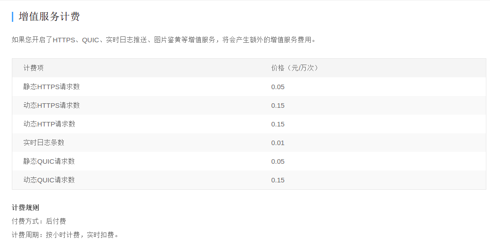
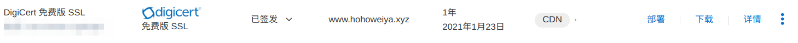

网站相关笔记¶
设置 Disqus¶
https://sgeos.github.io/jekyll/disqus/2016/02/14/adding-disqus-to-a-jekyll-blog.html
disqus 迁移（待研究）
mathjax中小于号与html的标签符号冲突¶
注意在mathjax中小于号左右空一格，不要连着写
Github Pages 与百度爬虫¶
解决 Github Pages 禁止百度爬虫的方法与可行性分析
利用 CDN 解决百度爬虫被 Github Pages 拒绝的问题
索引量减少到几乎为 0 了¶

然后发现原来是忘记在百度专用服务器上 git checkout gh-pages了，导致直接访问失败，git log 显示，上一次更新时间还是 20190804，时间点差不多能对得上去。
HTTPS 认证¶
为了让百度收录，所以单独为百度设置了域名解析，但是这种情况下不是 https，不能像正常情况下通过 CDN 申请 https。注意到阿里云可以申购免费证书，并下载，而且提供不同下载需求，比如针对 nginx 或 apache 的。直接按照帮助文档走一遍就好了。
Jekyll Part 13: Creating an Article Series¶
Jekyll Part 13: Creating an Article Series
Add an “Updated” field to Jekyll posts¶
Add an “Updated” field to Jekyll posts
iframe¶
Embedding a document inside another using the “iframe” tag
Variable tags¶
Track Non-JavaScript Visits In Google Analytics¶
Track Non-JavaScript Visits In Google Analytics
Ubuntu 搭建Apache¶
参考How To Install the Apache Web Server on Ubuntu 16.04
How To Install Linux, Apache, MySQL, PHP (LAMP) stack on Ubuntu 16.04
自定义根目录注意设置权限。如
Apache2: ‘AH01630: client denied by server configuration’
Disqus国内访问¶
参考资料
- fooleap/disqus-php-api
- 科学使用 Disqus
- 检测网络是否能够访问 Disqus
-
https://imququ.com/post/first-half-of-2016-blog-analytics.html#simple_thread
更换服务器重新配置¶
Step 1: Install Apache2¶
sudo apt update
sudo apt install apache2
配置云服务商的安全组，添加 80,443 端口，则应该能够访问 apache 的默认网页。
然后在 /var/www 下新建 disqus 文件夹
sudo mkdir /var/www/disqus
sudo chown -R $USER:$USER /var/www/disqus
并配置
sudo nano /etc/apache2/sites-available/disqus.conf
可以直接复制 000-default.conf，然后更改 ServerName 为域名，而 DocumentRoot改成 /var/www/disqus.
然后启动 disqus.conf 并关闭 000-default.conf
sudo a2ensite disqus.conf
sudo a2dissite 000-default.conf
这样的好处是以后方便添加不同的 hosts。
Step 2: Install php¶
直接下载就好了
sudo apt install php
默认装的是 php7.2，虽然文档中说的是 php5.6，切换不同版本的 php 可以参考 How to install php5 and php7 on Ubuntu 18.04 LTS
注意有
- 通过 Apache2, 即
# disable
sudo a2dismod php5.6
sudo a2enmod php7.2
- 通过
update-alternatives
sudo update-alternatives --set php /usr/bin/php7.2
# or select from the list
sudo update-alternatives --config php
另外还要安装 cURL，不然会报错
PHP Fatal error: Call to undefined function curl_init() in /var/www/disqus/disqus-php-api/api/init.php on line 104
其中curl_init() 是 cURL 的函数。需要注意选择与 php 匹配的版本
sudo apt-get install php7.2-curl
Step 3: Install api¶
cd /var/www/disqus
git clone git@github.com:fooleap/disqus-php-api.git
然后配置 config.php，似乎也要给 api 文件夹写的权限，不然会报出

然后在 Disqus Api 中更新 callback url，同时也要更新下 CNAME 记录。
最后可以在浏览器中访问 ****/login.php 看是否配置成功，如果不成功，可以查看日志文件寻找 bug，
cat /var/log/error.log
有一点比较困惑的是，disqus 会报出，

于是我手动把 login.php 文件中的 $redirect 改成 callback url，这样确实也成功了，但是我肯定错过了什么东西，也许 Apache 目录名的设置？
后来通过在 login.php 文件中添加打印输出语句
file_put_contents('php://stderr', print_r($redirect, TRUE));
似乎也只是 http 和 https 的区别，此时已经在 apache 配置文件指定了 host name 为域名。于是可以用 str_ireplace 来完成替换。
另外，设置不允许查看 Apache 的目录，参考 How to make Apache more secure by hiding directory folders
$ sudo vi /etc/apache2/apache2.conf
<Directory /var/www/>
Options Indexes FollowSymLinks
AllowOverride None
Require all granted
</Directory>
改成
<Directory /var/www/>
Options FollowSymLinks
AllowOverride None
Require all granted
</Directory>
然后
sudo service apache2 restart
20201001: 由 Ubuntu 系统迁移至 WSL¶
因为 aws 的 free tier 到期了，所以需要换一个境外服务器来转发 disqus 的评论，想到可以直接用办公室的电脑。
Step 1 与上文完全一致，只不过不需要配置安全组，只不过在本地试图访问 localhost，如果跳出网络配置的对话框，点击允许就好。
Step 2 直接按照 php 就好，因为并没有 php5.6，即
sudo apt install php
sudo apt-get install php7.2-curl
在 WSL 中启动服务器时，出现
protocol not available ah00076 failed to enable apr_tcp_defer_accept
这个在 APR_TCP_DEFER_ACCEPT error when starting Apache2 #1953 有讨论，解决方案是将 WSL1 升级为 WSL2
在 Windows command prompt 中查看 WSL 的版本
C:\> wsl -l -v
升级命令为
C:\> wsl --set-version Ubuntu 2
其中 Ubuntu 可能还需要带上具体版本，以上一个命令访问的结果为准。然后会有升级提示，但是后来发现即便下载了升级包，仍然需要在 BIOS 中进行设定，而现在远程不方便重启。只好作罢。
后来再次试图 start apache，发现这这只是个 warning，并不影响运行。
Step 3 不需要重新下载了，直接把 aws 服务器中的文件夹复制过来就好。
然后运行
./ngrok http 80
即可通过外网访问该服务器，因为域名已经解析至 CDN，所以直接在 CDN 配置中更改回源域名，不过此时回源 Host 的配置需要格外注意。
如果回源 Host 仍设置为 hohoweiya 的域名，则试图通过该域名访问时，会出现 Tunnel xxx.hohoweiya.xyz not found，而且似乎只有当 https 才出现这样的问题。
所以回源 Host 应当设置为 ngrok 分配的域名。
其实仔细想想，也挺好理解，如果在一台已知域名的服务器上使用 virtual host，配置文件中写的 ServerName 其实是为了通过域名来索引到该 virtual host，但是现在我真正的服务器并没有公网 ip 或者域名，只是通过 ngrok 来转发，所以如果仍将 hohoweiya 的域名作为回源 Host，则是试图在 ngrok 的服务器上找名为 xxx.hohoweiya.xyz 的 virtual host。其实隐约觉得这个也可以实现，感觉还是一个端口转发的问题，因为前面发现似乎只有 https 时不行。
这时另外一个问题出现了，现在虽然可以访问 login.php，但是也报出上文中出现过的 should match predefined callback URI 的问题，因为此时实际上是通过 ngrok 的域名访问的，所以直接的访问便是在 disqus application 后台更改 callback URI。
博客中插入网易云音乐¶
这个很容易实现，只需要在网易云中搜索要插入的音乐，然后点击“生成外链播放器”，将iframe代码插入博客的相应位置。
比如，我想在不愿沉默如谜插入容祖儿的重生。点击页面中的“生成外链播放器”，将iframe代码放进原md文件中。但一开始有问题，iframe被当成普通的md文本。在Jekyll raw HTML in post中找到了答案。
网易云给的iframe代码为
<iframe frameborder="no" border="0" marginwidth="0" marginheight="0" width=330 height=86 src="//music.163.com/outchain/player?type=2&id=522631413&auto=1&height=66"></iframe>
要将width=330 height=86改成width="330" height="86"，果然成功了。效果页面如下：

nginx虚拟主机配置¶
参考How To Set Up Nginx Server Blocks (Virtual Hosts) on Ubuntu 14.04 LTS
实现将本站用webhooks将其更新至阿里云服务器上，这与eslcn是同一个服务器，所以通过建立虚拟主机实现。
jekyll中的相对路径¶
URL 和 URI¶
引用个人觉得简洁明了的回答
URI (Identifier) 只讓你可以”區別”資源 URL (Locator) 還讓你可以”找到”資源 (所以URL比一般的URI更”強”, 是URI的子集)比如人的身份證號是 (非Locator的) Identifier: 不同身份證號一定是不同人, 但是用身份證號本身是找不到人的。这个人的住址或座标才是Locator。
作者：艾征霸 链接：https://www.zhihu.com/question/19557151/answer/130049112 来源：知乎 著作权归作者所有。商业转载请联系作者获得授权，非商业转载请注明出处。
nginx配置跳转¶
比如将所有 http://ServerIP/10 Boosting and Additive Trees/.* 的访问301重定向到http://$server_name/10-Boosting-and-Additive-Trees/10.1-Boosting-Methods/index.html，在nginx配置文件中添加
location ^~ '/10 Boosting and Additive Trees/' {
rewrite ^/.* http://$server_name/10-Boosting-and-Additive-Trees/10.1-Boosting-Methods/index.html permanent;
}
几点说明：
- 含等号时，不需要用
%20进行编码，但需要加上引号，否则会报错，“invalid number of arguments in ‘location’ directive”，参考nginx-rewrite-that-includes-a-blank-space - 具体location匹配参考nginx location 匹配规则
- 参考how-to-redirect-single-url-in-nginx
iframe跨域解决方案¶
flask + ajax + post + 跨域¶
参考Flask 和 jQuery 联合实现传送 JSON 数据的 POST 跨域请求 (CORS)
简单来说，
在客户端的 ajax 中添加
crossDomain: true, // 允许跨域请求
另外，在服务器端，通过CORS(app, resources=r'/*')让flask服务器上所有的URL支持跨域请求。
另外，在ajax中post json的时候，注意用JSON.stringify()进行转换，否则格式为否则格式为 a=2&b=3&now=14...（参考使用Ajax方式POST JSON数据包（转） - 平和的心 - 博客园）
cookie vs. session¶
- cookie 数据存放在客户的浏览器上，session 数据放在服务器上；
- cookie 不是很安全，别人可以分析存放在本地的 COOKIE 并进行 COOKIE 欺骗，考虑到安全应当使用 session；
- session 会在一定时间内保存在服务器上。当访问增多，会比较占用你服务器的性能。考虑到减轻服务器性能方面，应当使用 COOKIE；
- 单个 cookie 在客户端的限制是3K，就是说一个站点在客户端存放的 COOKIE 不能超过 3K；
参考理解Cookie和Session机制 - Andrew.Zhou - 博客园
GA 相关¶
Travis CI¶
- https://mwop.net/blog/2016-01-29-automating-gh-pages.html
- Deploying Docs on Github with Travis-CI
注意 GITHUB_TOKEN 的设置，参考Creating a personal access token for the command line
Jekyll add RSS feed¶
图片旋转后无效果¶
原图片信息为
2018-10-29-cafe.jpg: JPEG image data, JFIF standard 1.01, aspect ratio, density 1x1, segment length 16, baseline, precision 8, 1080x1440, frames 3
采用 Shotwell 旋转图片后，
2018-10-29-cafe.jpg: JPEG image data, JFIF standard 1.01, aspect ratio, density 1x1, segment length 16, Exif Standard: [TIFF image data, little-endian, direntries=3, orientation=lower-left, software=Shotwell 0.22.0], baseline, precision 8, 1080x1440, frames3
多了 EXIF 信息，其中有 orientation 信息。但是参考 img tag displays wrong orientation 的帖子，可知，有些浏览器并不遵循这个规则，即无视 EXIF 信息，从而网页端无效果。有人提到可以加上
img {
image-orientation: from-image;
}
但这个似乎只有 Firefox 和 Safari 支持，Chrome 不支持。
解决方案：采用 mogrify 或 convert 进行旋转，如
mogrify -rotate "-90" 2018-10-29-cafe.jpg
查看文件信息
2018-10-29-cafe.jpg: JPEG image data, JFIF standard 1.01, aspect ratio, density 1x1, segment length 16, baseline, precision 8, 1440x1080, frames 3
注意到没有 EXIF 信息，而且 size 也由 1080x1440 变成了 1440x1080，所以这算是真旋转，而之前的加 EXIF 信息算是伪旋转吧。
如果文件已经存在 orientation 的 EXIF 信息，则 mogrify -rotate 似乎不起作用，解决方案为直接删掉 EXIF 信息，再进行相应的 rotate 操作，其中删除 EXIF 信息的命令是
exiftool -all= /tmp/my_photo.jpg
参考 How can I read and remove meta (exif) data from my photos using the command line?
jekyll tags 逗号分隔¶
采用
{% for tag in page.tags %}
<a href="/tag/{{tag}}">{{tag}}</a>
{% unless forloop.last %},{% endunless %}
{% endfor %}
但 List of Dynamic Links in Jekyll 提到了更完整的方案，
{% capture tagscommas %}
{% for tag in page.tags %}
<a href="/tag/{{tag}}">{{tag}}</a>
{% unless forloop.last %},{% endunless %}
{% endfor %}
{% endcapture %}
{{tagscommas}}
Correct Jekyll¶
refer to Configuring Jekyll for User and Project GitHub Pages
Image Slider¶
参考 Image Slider - Jssor Slider
代码高亮¶
URL 中最后的斜杠¶
新建 tag 页面后，发现链接竟然跳到源站域名上去了，跟又拍那边的技术支持沟通也没找到原因，最后猛然想到是 tag 页面的 url 没有加斜杠，查了一下，加不加斜杠区别还挺大的。
博客中的定理环境¶
通过 css 实现，例如
.theorem {
display: block;
margin: 12px 0;
font-style: italic;
}
.theorem:before {
content: "Theorem.";
font-weight: bold;
font-style: normal;
}
详见 LaTeX Theorem-like Environments for the Web
这种方法不能使用 markdown 的列表环境，有时候会不太方便。注意到 kramdown 本身具有一些特性可以解决这个问题，比如设置 Block Attributes，详见 Quick Reference of kramdown
则我可以用
{: .theorem}
实现定理环境，而且这样还有额外的好处，可以突出定理。但是 before 的字 “Theorem” 会单独占据一行，误打误撞看到 Adding quotes to blockquote，试了一下
blockquote p {
display: inline;
}
可以解决这个问题，但担心会破坏其他的 blockquote 环境，于是指定 theorem 可以这样处理，即
blockquote.theorem p {
display: inline;
}
这个用法参考 CSS Id 和 Class
list start from 0¶
In kramdown, use an IAL declaration before the list, say
{:start="3"}
1. test
1. test
1. test
Refer to Support starting numbered lists with arbitrary number #211
Implementation for html can be found here.
字体选择¶
- 超赞！网页设计中最常见的30款英文字体
- Source Han Serif Simplified Chinese in Adobe Fonts, and Adobe Fonts
- Google Fonts
- dafont.com
- Webfont Generator
ruby 版本¶
今天 GitHub 提醒英文博客存在
Known high severity security vulnerability detected in rubyzip < 1.3.0 defined in Gemfile.lock.
于是合并了它自动创建的 pull request: Merge pull request #79 from szcf-weiya/dependabot/bundler/rubyzip-2.0.0
但是后来发现在本地 bundle exec jekyll serve 预览失败。报错信息为
rubyzip-2.0.0 requires ruby version >= 2.4, which is incompatible with the current version, ruby 2.3.1p112
看样子 ruby 版本不够，于是参考 How do I upgrade to Ruby 2.2 on my Ubuntu system?
sudo apt-add-repository ppa:brightbox/ruby-ng
sudo apt-get update
sudo apt-get install ruby2.4
安装了 ruby2.4，完成后 ruby 也自动从 ruby2.3 更改到了 ruby2.4，但是重新运行
bundle exec jekyll serve
还是报同样的错误信息。后来参考 Bundler using wrong ruby version，运行
bundle env | grep ruby
发现里面的版本确实还是 2.3，于是按照里面的建议运行
gem install bundler
这样重新运行 bundle env | grep ruby 发现版本确实更新过来了。但是再次运行
bundle exec jekyll serve
出现了新的错误
An error occurred while installing commonmarker (0.17.13), and Bundler cannot continue.
Make sure that `gem install commonmarker -v '0.17.13' --source 'https://rubygems.org/'` succeeds before bundling.
后来参考 Error while installing json gem ‘mkmf.rb can’t find header files for ruby’
安装
sudo apt-get install ruby2.4-dev
这里按照报错信息检查发现 /usr/lib/ruby/ 文件夹下的确没有 include 目录，只有 2.4, 2.5 等目录，则这需要装对应 ruby 版本的 dev。当我把系统从 Ubuntu 16.04 更新到 Ubuntu 18.04 时，此时系统默认为 ruby-2.5,则我需要装的是
sudo apt-get install ruby2.5-dev
解决了问题！
发现还没有这么简单，总是报错
Could not find ffi-1.11.1 in any of the sources
但实际上已经装好了。不知道咋回事。
后来参考 https://jekyllrb.com/docs/ 重头开始，
gem install jekyll bundler
然后这一步一开始报错
ERROR: Error installing jekyll:
jekyll requires RubyGems version >= 2.7.0. Try 'gem update --system' to update RubyGems itself.
于是运行
[sudo] gem update --system
应该要加上 sudo，否则会报错
Installing RubyGems 3.0.6
ERROR: While executing gem ... (Errno::EACCES)
Permission denied @ dir_s_mkdir - /usr/local/lib/site_ruby
安装成功后，最后终于成功了！！
CDN 价格比较¶
比较了阿里云和又拍云，收费都包含两个部分，基础服务费用和增值服务请求费用。
基础服务可以按流量或带宽计费，但是带宽一般适用于大客户计费，又拍云对普通客户没有提供此选项，而稍微看了看阿里云的带宽收费，感觉会高于流量收费。
又拍云：

阿里云：


多个 CDN 混合使用¶
华为云可以免费申请 500 G 的境外 CDN，而又拍云之前买了大陆流量的 CDN，再加上阿里云域名解析有“智能解析”选项，猜测能否开通两个 CDN，境外走华为云，境内走又拍云。经试验，应该是可以的，
- 又拍云加速区域改为境内
- 华为云加速区域选择境外，同一加速域名
- 阿里云域名解析添加华为云 CDN 设置时产生的 CNAME，注意解析线路选择境外。又拍云此前设置的 CDN 保持默认不变。
这样为什么就可以了呢？！注意到解析线路的“默认”是这样说的，
必填！未匹配到智能解析线路时，返回【默认】线路设置结果
所以是不是应该这样理解，对于境外访问，因为能够匹配到智能解析线路，所以指向华为云的 CDN，而对于境内访问，因为匹配不到智能线路，则采用默认的 CNAME，即又拍云的。
但还有几个小问题需要解决：
- 又拍云之前有申请免费的 ssl 证书，所以支持 https，但境外走 CDN 后，华为云上面没有 SSL 证书，于是在阿里云那边申请了免费的证书，然后下载，然后将
.pem和.key输入到华为云的 https 设置中。 - 对于又拍云，其 https 连接是增值服务，而华为云竟然没看到这一点，这样挺好的，所以少交了 https 的增值费。
另外，在配置华为云的回源 host 突然意识到一点，其实没必要通过中间域名，或许直接在 github 那边的 CNAME 文件中添加同一加速域名即可，不需要单独解析这个加速域名！这个就有点像在服务器中任意指定一个域名，但是并没有在域名服务商那边提供解析，它只是为了在 github 这个大服务器中找到对应的结点。
更新证书¶
一年的免费证书就要到期了，是时候更新一波了……
从 2021 开始，阿里云上的免费证书需要通过 “证书资源包” 来申请，首先花 0 元购买好证书之后，然后申请证书，主要是填写绑定的域名信息，及联系人信息，然后会验证域名所有权，一般是通过 DNS 验证，这里一开始下拉框竟然只有手动 DNS 和文件验证两种方式，不过似乎输入了域名之后，可能是识别到了当前域名就在阿里云上面，所以出现了自动 DNS 验证，简言之自动在域名解析那里添加了解析，所以后面只要确认就好了。
证书立马就能签发，下一步是需要在 CDN 那里更改证书，只需要切换证书编号就好。
其实在 CDN 中证书选择一栏有“免费证书”，按理说不需要单独的证书申请流程，但是似乎不太成功，并且有提醒信息
受CA机构对免费证书的管理调整，免费证书的申请将会受到影响，建议使用云盾证书服务进行相关证书申请。
证书签发完成后，除了手动去 CDN 那边切换，也可以通过“部署”进行操作，不过需要确认一下权限。

部署时选择 CDN 即可。另外注意到对于 www.hohoweiya.xyz，会主动匹配到 hohoweiya.xyz，所以无需重复对 hohoweiya.xyz 进行设置，如下图